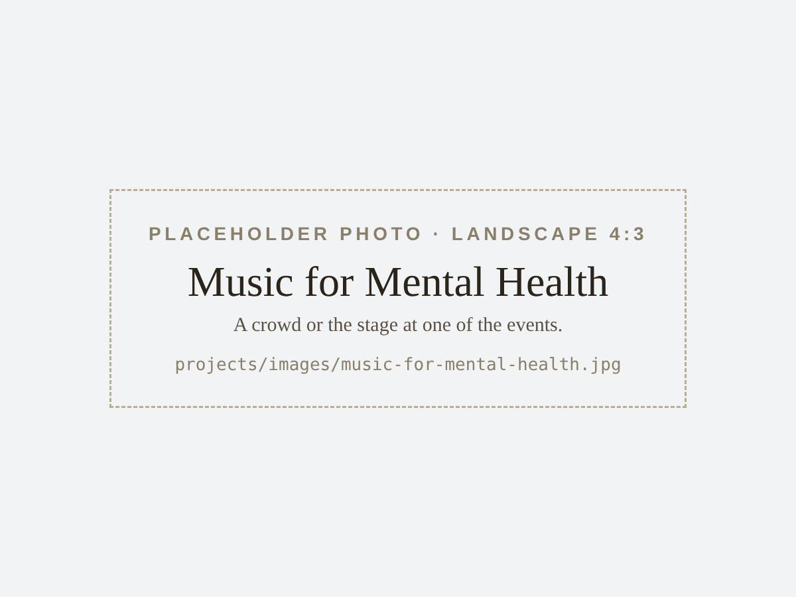
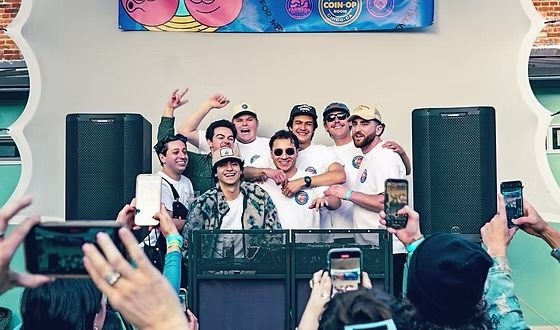

Music for Mental Health
Chico, California

Along with some other Chico State students, we started Music for Mental Health. What began as a few jam sessions with friends became a group of DJs putting on events around Chico, including our annual Sahndypalooza.
Every dollar went to organizations including Duets Across America, the Music Therapy Impact Fund, the National Alliance on Mental Illness (NAMI), and the Boys & Girls Club of North Valley: over $2,000 in 2021–2022 and over $3,000 in 2023–2024. We also made t-shirts to spread the message, and all 200 sold out.
Organizing and playing these events, I noticed that a night often continued well past its last song: people replayed what they had heard, sent it to someone who had been there, and came back. That observation shaped the questions I want to study.
